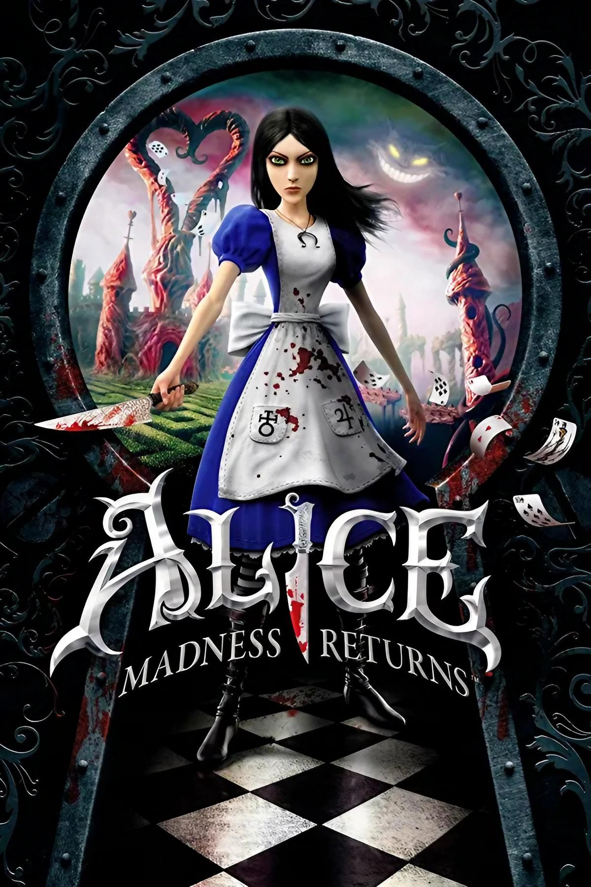

REGRESAR
ALICE MADNESS RETURNS

¿De qué trata?
Alice: Madness Returns es un videojuego de plataformas y acción con toques góticos desde una perspectiva en tercera persona, con ataques y combos fáciles de usar parecidos a las series de Devil May Cry y a Splatterhouse de 2010. La diferencia es que no se pueden ejecutar combos de ataque aéreos. El jugador controla a Alice durante todo el juego corriendo, saltando, esquivando y atacando.
Al igual que el primer juego, las armas de Alice son objetos cotidianos con un enfoque mortal pero a diferencia de American McGee's Alice, durante los combates Alice va adquiriendo un número de armas notablemente más limitado las cuales puede usar de distintas formas.
En esta entrega el armamento de Alice consiste mayormente en herramientas de cocina que funcionan como armas. Su arma principal es la Espada Vorpal, un cuchillo de cocina con decoraciones basada en la auténtica Espada Vorpal de las obras de Carroll. El Molinillo de Pimienta sirve como una ametralladora operada con una manivela para atacar a enemigos a distancia y coleccionar morritos de cerdo. El Caballito de Juguete se usa a modo de mazo para infligir un gran daño a los enemigos y romper sus defensas. El Cañón Tetera lanza sobres de té como si fuera granadas que explotan y causan un gran daño, además de destrozar obstáculos al igual que el Caballito de Juguete.
Durante el juego se irán recolectando dientes que dejan los enemigos al morir o se encuentren escondidos en los escenarios, los cuales se podrán canjear para mejorar las armas a versiones más poderosas. Tan sólo no se pueden mejorar el Paraguas y la Bomba de Relojería: el primero debido a que es un objeto de defensa con el que pueden desviarse proyectiles enemigos y el segundo debido a que es una bomba que explota a control remoto o pasado un minuto cuyo principal uso es el accionar interruptores de presión.
La barra de salud está representada por pétalos de rosa. Si la barra se vacía, Alice volverá al último punto de control. Caer al vacío o chocarse contra líquidos peligrosos no le causan daño a Alice, pero la harán reaparecer en la plataforma más cercana. El juego también tiene un modo Histeria, en el cual Alice no pierde salud y sus ataques causan el doble de daño. El modo Histeria sólo puede activarse cuando la barra de salud está muy baja, y únicamente durante un limitado periodo de tiempo.
Mientras se avanza por los niveles, pueden encontrarse diversos secretos.
Una mecánica básica del juego es encogerse para avanzar por sitios pequeños, como cerraduras, y también activar el Contrasentido, que permite ver plataformas y superficies invisibles; luego de volver al tamaño normal, estas plataformas se desvanecen lentamente, teniendo que recordar dónde se encontraban. Los Morritos de Cerdo, los cuales producen ruido cuando Alice está cerca, pueden atacarse con el Molinillo de Pimienta para revelar caminos secretos. Las Caracolas, que también están escondidas a lo largo de los niveles, dan al jugador un reto, ya sea intelectual o de combate, para así ganar un bote de pintura. Cuando se consiguen cuatro botes, la salud de Alice aumenta en una rosa. Otro objeto para recoger son las Memorias, son pequeños diálogos que diferentes personajes comentan con Alice o cerca de ella, revelando detalles sobre la trama del juego.
Una vez completado el juego, puede empezarse nuevamente una partida con todas las armas y mejoras obtenidas durante la partida anterior.